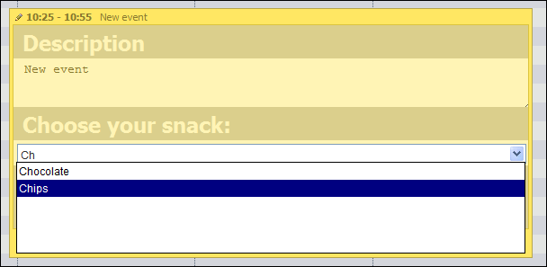

Combo
Required library edition: 
Required library file: dhtmlxscheduler_editors.js; dhtmlxcombo.css, dhtmlxcommon.js, dhtmlxcombo.js
This type of editor creates a select box using DHTMLX Combo component.
Here's the code snippet of how it could be added:
var snacks = [ { key: 5, label: 'Pineapple' }, { key: 6, label: 'Chocolate' }, { key: 7, label: 'Chips' }, { key: 8, label: 'Apple pie' } ]; scheduler.config.lightbox.sections=[ // other sections { name:"snack", options: snacks, map_to:"combo_select", type:"dhtmlx_combo", image_path: "../../../dhtmlxcombo/codebase/imgs/", filtering: true, script_path: "../../php/complete.php", cache: true } ];
Following options are used:
- name - name of the editor
- options - elements which will be displayed in the editor
- map_to - property of the event maped to the editor
- type - editor's type
- image_path - path to the DHTMLX Combo images
- filtering - optional, toggles auto filtering support (options will be filtered as you type)
- script_path - optional, path to the server script which will handle the filtering
- cache - optional, enable/disable caching of script responses (using “true” recommended)
Note that it's possible to use only client-side filtration without using server scripts. Set filtering option to true and remove script_path and cache. For additional information check DHTMLX Combo filtering page.
Example of how such editor looks like:
